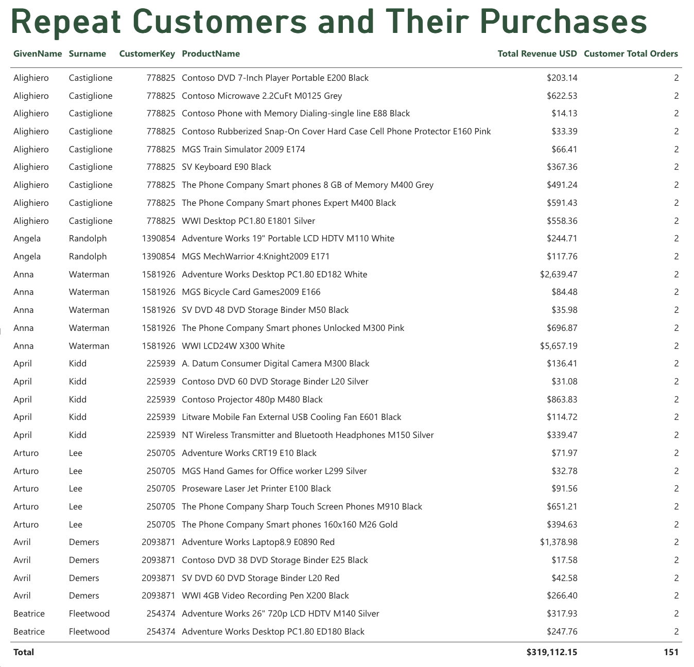

Power BI Sales Data Analysis - Ashton Hatch
Who are our repeat customers, and what do they buy?

This table lists customers who have placed more than one order as well as the products that these customers have ordered. Information provided includes customer id, number of orders, total revenue, product name, and customer name.
From the table we can see that repeat customers bought a range of products such as televisions, computers, phones and accessories. Anna Waterman bought a desktop computer and a monitor as well as several other items.
Looking at repeat customers can help a business understand customer shopping habits and which products bring customers back.
Previous Page Next Page